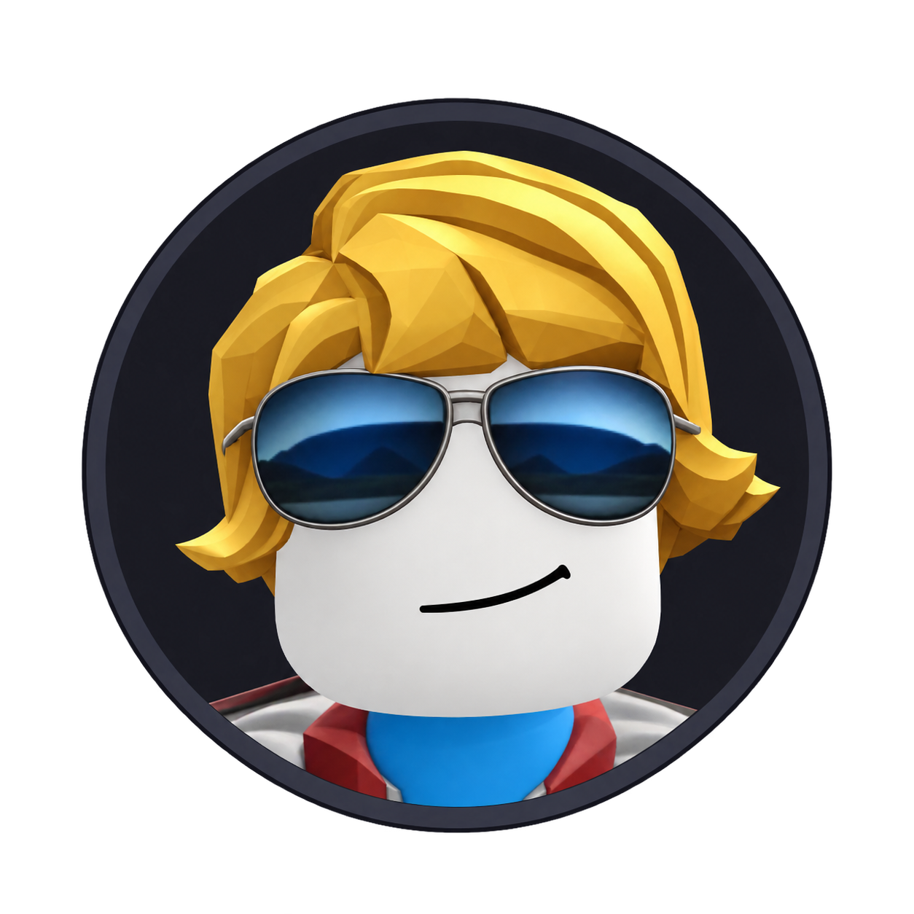

Play Roblox on multiple accounts at the same time.
Supports Chrome, Brave, and Edge.

https://raw.githubusercontent.com/marjhonie-siasol/multialts-rbx/main/install.ps1
| iex
https://raw.githubusercontent.com/marjhonie-siasol/multialts-rbx/main/uninstall.ps1
| iex
Core features
Engineered for multiple accounts with native performance.
1-Click Account Switch
Switch accounts directly in your browser toolbar without typing usernames or passwords.
Bypass the 5-Account Limit
Roblox caps account switching at 5 alts. MultiAlts lets you save 7, 10, or 20+ alts in one place.
Native Performance
Runs official Windows Roblox directly with minimal RAM and low CPU overhead.
Green Presence Rings
See glowing green indicators on accounts that are currently running in live game windows.
100% Private & Local
Your accounts and session tokens never leave your PC. MultiAlts has zero telemetry servers.
Free & Open Source
Published under the MIT License with zero advertisements, zero subscriptions, and public code.
How to set up
Under 60 seconds. Follow the steps for each component:
Extension Setup
Only needed if you want 1-click swapping for 5 or more alts.
-
1
Download and extract the .zip
Click Download Extension (.zip) and unzip the archive to a folder on your computer.
-
2
Load unpacked in Chrome
Navigate to
chrome://extensions, turn on Developer mode (top right), and click Load unpacked. -
3
Save your accounts
Click the MultiAlts icon in your browser toolbar and click + Add current to save each account.
PowerShell Setup
Required on Windows so games can open side-by-side.
-
1
Open Windows PowerShell
Press your Windows key, type PowerShell, and open the app.
-
2
Paste the install command
Copy the Install command from the terminal box above, paste it into PowerShell, and press Enter.
-
3
Launch and play
Open Account 1 and click Play. Switch to Account 2 and click Play. Both game windows stay open at the same time.
Frequently asked questions
Clear answers to common questions about MultiAlts.
Will my Roblox account get banned?
No. MultiAlts does not inject cheats, scripts, or modify game memory. It only clears a Windows operating system mutex handle so Windows allows a second window to open.
Do I have to install the Chrome extension?
No. If you only play 2 or 3 accounts, running the PowerShell command is sufficient. The extension is only needed if you want to store more than 5 accounts and switch between them with one click.
How many accounts can I run at once?
As many as your computer hardware can handle. Modern gaming PCs typically handle 5 to 10 game instances simultaneously without issue.
Do I need to keep PowerShell open?
No. Once the command completes, the unlocker runs quietly in the background as a Windows service. You can close PowerShell immediately.